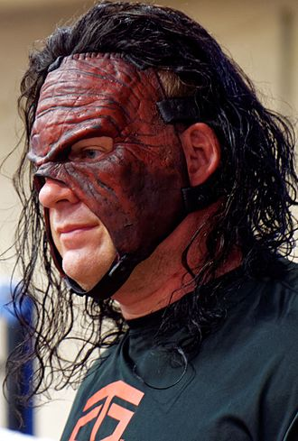

Glenn Thomas Jacobs (born April 26, 1967) is an American professional wrestler, actor, author, businessman, and politician. As a Republican, he is the Mayor of Knox County, Tennessee. In professional wrestling, Jacobs is signed to WWE, where he is known by his ring name Kane. He began his professional wrestling career on the independent circuit in 1992, wrestling in promotions such as Smoky Mountain Wrestling (SMW) and the United States Wrestling Association (USWA) before joining the World Wrestling Federation (WWF, now WWE) in 1995. Jacobs played various characters until 1997, when he was repackaged as Kane, the younger half-brother of The Undertaker, with whom Jacobs would alternatively feud or team as The Brothers of Destruction.
Following his debut, Kane remained a pivotal component of the WWF's "Attitude Era" of the late 1990s and early 2000s, defeating the era's "poster boy" Stone Cold Steve Austin for the WWF Championship in his first pay-per-view (PPV) main event at King of the Ring in June 1998. He has continued to headline PPV cards through 2018, and has appeared in more of such events than any other performer in WWF/WWE history.
Within WWE, Kane is a three-time world champion (having held the WWF Championship, ECW Championship and World Heavyweight Championship once each) and a 12-time world tag team champion (having held the World Tag Team Championship, WCW Tag Team Championship and WWE Tag Team Championships with various partners). He is also a two-time Intercontinental Champion and a Money in the Bank winner, as well as the third man to complete WWE's Grand Slam. Kane holds the record for cumulative Royal Rumble match eliminations at 44. The last title Kane won was the 24/7 Championship on September 16, 2019, the only title won under his real name. Veteran wrestler Ric Flair described Kane as "the best in the world", while Big Show dubbed him "the best big man ever".
Outside of professional wrestling, Jacobs has made numerous guest appearances in film and on television, including the lead role in the 2006 WWE Studios production See No Evil and its 2014 sequel. He is also a longtime supporter of libertarian political causes. In March 2017, Jacobs announced that he was running for the mayoral seat of Knox County, Tennessee as a Republican. On May 1, 2018, he won the Republican primary election for the mayoral seat of Knox County, and on August 2, went on to win the general election.